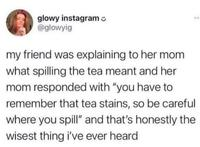

While Nvidia has dominated the "infrastructure boom" since 2022's launch of ChatGPT and "the generative AI craze," CNBC writes that "This week offered the starkest illustration yet of what MIzuho analyst Jordan Klein said could be a 'changing of the guard in AI.'"
Chipmakers Advanced Micro Devices and Intel notched gains of about 25%, while memory maker Micron jumped more than 37% and fiber-optic cable maker Corning climbed about 18%. All four of those companies have more than doubled in value this year, with Intel leading the way, up well over 200%. Nvidia, meanwhile, is only slightly ahead of the Nasdaq in 2026, gaining 15% for the year, aided by an 8% rally this week. In spreading the wealth to a wider swath of hardware companies, investors are clearly betting that the bull market in AI has long legs and that data centers are going to need a wider array of advanced components for years to come.
Memory has been the biggest theme of late due to a global shortage that's driven up prices and turned Micron, a 47-year-old company tucked in a sleepy corner of the semiconductor market, into one of the hottest trades over the past 12 months. Micron blew past an $800 billion market capitalization for the first time this week, and the stock is now up over 750% in the past year. CEO Sanjay Mehrotra told CNBC in March that key customers are only getting "50% to two-thirds of their requirements" because of supply issues. The memory market is largely dominated by Micron, along with Korea-based Samsung and SK Hynix, which are also both in the midst of historic rallies...
Bank of America estimates the data center CPU market could more than double from $27 billion in 2025 to $60 billion in 2030. AMD's quarterly results this week underscored the emerging trend, as earnings, revenue and guidance sailed past estimates on strong data center growth. The company has long led the CPU charge, and CEO Lisa Su said on the earnings call that AMD now expects 35% growth over the next three to five years in the server CPU market, up from a forecast of 18% growth that the company provided in November.
The article cites two other big movers:
Intel "is in the midst of a revival sparked by a major investment from the U.S. government last year. Intel's stock had its best month on record in April, more than doubling, and has continued notching massive gains, rising 33% in the early days of May."
Nvidia still remains the world's most valuable company "and is expected to show revenue growth of 70% this fiscal year," the article points out — adding that companies like Corning are also benefiting from Nvidia partnerships. "Glass maker Corning, which celebrated its 175th anniversary this week, signed a massive deal with Nvidia on Wednesday that involves the development of three new U.S. factories dedicated entirely to optical technologies... likely a major step in Nvidia's move away from copper cables and towards fiber-optic cables as it builds out its rack-scale systems."
Read more of this story at Slashdot.
CNN reports on a "sudden surge of claimed sightings" of "unidentified figures averaging 8 feet tall in wooded areas" along Ohio's Mahoning River.
"And it stopped just as quickly as it started," says Jeremiah Byron, host of the Bigfoot Society Podcast, which collected and mapped the reports .... Byron doesn't take every report at face value, making sure he talks to people directly before publicizing their claims. Once word got out about the reports in Ohio, so did the obvious fakes. "I started to get a lot of AI-generated reports in my email.
It got up to the point where I was probably getting about 1,000 emails a day," he says. But when Byron spoke by phone with people who made the initial reports, they convinced him they weren't making anything up. "It was obvious they weren't just wanting to get their name out there," says Byron. "They were just freaked out by what they experienced, and they didn't want anything else to do with it."
[...] Local law enforcement in Ohio also seem to be enjoying the publicity. Portage County Sheriff Bruce D. Zuchowski made a series of gag posts purporting to show the arrest of Bigfoot and his detention by Immigration and Customs Enforcement, only for the creature to escape from custody at the Canadian border...
Despite the levity, the sheriff's office really did get some calls from concerned residents, Zuchowski says. "Ten individual people were like, 'Yeah I was walking my dog at 4 a.m. and I saw this hairy figure and I smelled this musty odor and there was this big thing and all of a sudden it ran,'" the sheriff told CNN affiliate WOIO in March.
Read more of this story at Slashdot.
A chain of 30 U.S. newspapers including the Sacramento Bee, the Miami Herald and the Idaho Statesman "has started to use a new AI tool that can summarize traditional articles and spit out different versions for different audiences," reports the New York Times.
And the chain's reporters "are not happy about it."
Journalists in many of the company's newsrooms are now withholding their bylines from articles created by the new tool, meaning that those articles will run with a generic credit rather than a reporter's name, as is customary. They are also labeled AI-assisted. "We don't want to put our bylines on stories we did not actually write even if they're based on our work," said Ariane Lange, an investigative reporter at the Sacramento Bee and the vice chair of the Sacramento Bee News Guild. "That in itself feels like a lie."
The reporters' byline strike is one of the sharpest conflicts yet between journalists and their companies over the use of AI. Related debates are playing out in newsrooms across the country, as publishers experiment with new AI tools to streamline work that used to take hours, and some even use it to write full articles... [E]xecutives have promoted the tool internally as a way to increase the number of articles published and ultimately gain new subscribers... [Eric Nelson, the vice president of local news] said using reporters' bylines on the AI-generated articles was a way to show "authority" on Google so the search engine would rank the articles higher in the results. He also said the company was experimenting with feeding in reporters' notes to create articles. "Journalists who embrace and experiment with this tool are going to win," Nelson said in the meeting. "Journalists who are defiant will fall behind"....
McClatchy's public AI policy states that the company uses AI tools to summarize articles to "help readers quickly understand the main points of a single story or catch up on multiple stories about a larger topic," and that editors review the output before publication.
Read more of this story at Slashdot.
America's school districts "spent billions on technology during the pandemic," reports the Washington Post.
"But now some states are limiting in-school screen time because of concerns about its impact on children."
Nationwide [U.S.] schools invested at least $15 billion and possibly as much as $35 billion from federal pandemic relief funds on laptops, learning software and other technology between 2020 and 2024, according to an estimate by the Edunomics Lab, an education think tank. By last school year, 88% of public schools reported in a federal survey they had given every child a laptop, tablet or similar device.
Now, some states and school districts are walking back their technology use following pressure from parents who claim too much in-school screen time has zapped children's attention spans and left them worse off academically. At least a dozen states introduced or adopted policies this year that attempt to regulate screen time in schools — from prescribing limits to allowing families to opt out of virtual instruction... In Missouri, a bill would require every school district in that state to come up with a screen time policy is making its way through the state legislature. "Ed tech is just big tech in a sweater vest," said Missouri state Rep. Tricia Byrnes (R), who introduced the legislation and blames what she described as the overuse of technology for middling test scores...
Complicating the issue is research that shows students do not see any academic gains when provided with laptops. A meta-analysis of studies on reading comprehension suggests paper-based texts are better than digital-based reading... A body of research has established that excessive or unstructured screen time can have detrimental effects on children, including harming language development, weakening social skills and triggering anxiety and depression. But the effects of school-issued devices and in-school usage on children's development are less understood, said Tiffany Munzer, a developmental behavioral pediatrician and digital media researcher at the University of Michigan. Some studies report that high-quality digital tools can support students' learning goals, Munzer said. But "a lot of the apps that are marketed as educational ... are not actually educational and contain a lot of commercialized content."
Read more of this story at Slashdot.
"Meta's embrace of AI is making its employees miserable," reports the New York Times.
And "After Meta said late last month that it would start tracking employees' computer use, hundreds of workers spoke up." (One employee even told Meta's CTO in an internal post, "Your callousness to the concerns of your own employees is concerning."
In an internal post last month, Meta told its U.S. employees that it was making a change that would affect tens of thousands of them. What employees typed into their computer, how they moved their mouse, where they clicked and what they saw on their screen would be tracked, Meta said. The goal, the company said, was to capture employee data so Meta's artificial intelligence models could learn "how people actually complete everyday tasks using computers." Many workers immediately revolted. In online comments, they blasted the tracking as a privacy violation, calling it antisocial and callous... [One engineering manager even asked "How do we opt out?"] "There is no option to opt-out on your corporate laptop," replied Andrew Bosworth, Meta's chief technology officer. Employees reacted by posting more than 100 angry and surprised emoji, according to the messages....
Meta is pushing its 78,000 employees to adopt AI tools and factoring their use of the technology in performance reviews. The company is also tracking employees' computer work to feed and train its AI models. And it is cutting jobs to offset its AI spending, saying last month that it would slash 10% of its workforce. That has led to anger and anxiety as employees await news of whether they are affected by the layoffs, which are slated to be carried out May 20, according to 11 current and former Meta employees. Some said they no longer saw Meta as a place for a long career. Others were looking for new jobs or trying to signal that they wanted to be laid off so they could receive severance pay, the current and former employees said. "It's incredibly demoralizing," an employee who does user research wrote in an internal post, which was reviewed by the Times...
Meta also introduced internal dashboards to track employees' consumption of "tokens," a unit of AI use that is roughly equivalent to four characters of text, four people said. Some said the dashboards were a pressure tactic to encourage competition with colleagues. That led some employees to make so many AI agents that others had to introduce agents to find agents, and agents to rate agents, two people said.
Read more of this story at Slashdot.
Under the nonprofit Linux Foundation, "a new Sustaining Package Registries Working Group will seek to identify concrete funding, governance, and security practices," reports ZDNet, "to keep code flowing as download counts grow.... Because software builds, continuous integration pipelines, and AI systems hammer registries at machine speed rather than human speed, the sites can't keep up.
"That growth has brought a surge in bot traffic, automated publishing, security reports, and outright abuse, exposing what the working group bluntly calls a 'sustainability gap'."
Sonatype CTO Brian Fox, who oversees the Maven Central Java registry, estimates open-source registries saw 10 trillion downloads in 2025. And "The same pattern is appearing across ecosystems. More machine traffic. More automation. More scanning. More expectations around uptime, integrity, provenance, and policy enforcement. More cost. More support burden. More dependency on infrastructure that the industry still talks about as though it runs on goodwill and spare time."
ZDNet reports that "To tackle that, Sonatype has teamed up with the Linux Foundation and other package registry leaders, including Alpha-Omega, Eclipse Foundation (OpenVSX), OpenJS Foundation, OpenSSF, Packagist, Python Software Foundation, Ruby Central (RubyGems), and the Rust Foundation (Crates)."
The idea is to give operators a neutral forum to discuss money, governance, and shared operational burdens openly. Once that's dealt with, they'll coordinate how to explain those realities back to companies and organizations that have long assumed registries are "free." No, they're not. They never were. As the Linux Foundation pointed out, "Registries today run primarily on two things: (1) infrastructure donations and credits; and (2) heroic efforts from small paid teams (themselves funded by donations and grants) and unpaid volunteers that operate and maintain registry services. The bulk of donations and grants comes from a small set of donors and doesn't scale with demands on the registry."
The working group is explicitly positioned as a venue where registry leaders and ecosystem stakeholders can align on "practical, community-minded" ways to sustain that infrastructure, rather than each operator improvising its own survival plan in isolation.
ZDNet says the group will also coordinate security practices and information, and craft frameworks "that make it politically and legally possible to introduce sustainable funding models without fracturing communities." And they will also "align messaging and educational content so developers, companies, and policymakers finally understand what it costs to run these services."
Read more of this story at Slashdot.
NASA's $500 million Neil Gehrels Swift space observatory was launched in 2004. But it's now "at risk of falling back through the atmosphere and burning up without intervention," reports Spaceflight Now.
Fortunately, a mission to prevent that "just passed a notable prelaunch testing milestone."
On Friday, NASA announced that the Link spacecraft, manufactured by Katalyst Space Technologies to intervene before Swift's fate is sealed, completed its slate of environmental testing at the agency's Goddard Space Flight Center in Greenbelt, Maryland... "Swift will likely re-enter the atmosphere sometime later this year if we don't attempt to lift it to a higher altitude, [said John Van Eepoel, Swift's mission director at NASA Goddard, in a NASA press release]. "Katalyst has gotten to this point in just eight months, and we're glad they were able to use NASA's facilities to test Link and draw on our expertise to help tackle questions that popped up along the way...."
"Given how quickly Swift's orbit is decaying, we are in a race against the clock, but by leveraging commercial technologies that are already in development, we are meeting this challenge head-on," said Shawn Domagal-Goldman, acting director, Astrophysics Division, NASA Headquarters, at the time... Attempting an orbit boost is both more affordable than replacing Swift's capabilities with a new mission, and beneficial to the nation — expanding the use of satellite servicing to a new and broader class of spacecraft...."
Swift is in an orbit inclined 20.6 degrees from the equator, which is why Katalyst selected Northrop Grumman's Pegasus XL air-launched rocket in November to fly the mission. "The versatility offered by Pegasus' unique air-launch capability provides customers with a space launch solution that can be rapidly deployed anywhere on Earth to reach any orbit," said Kurt Eberly, Director of Space Launch for Northrop Grumman.
The mission is set to launch in June.
Read more of this story at Slashdot.
September 2025? January 2026? Delivery dates keep slipping for the Trump Organization's "Trump Phone" — a gold-coloured Android smartphone priced at $499 (£370). But in March the Verge spotted signs the phone was moving forward:
FCC listings for a smartphone with the trade name "T1" show that it was tested late last year, and granted certification by the FCC in January... [T]he phone was submitted for testing by another company entirely: Smart Gadgets Global, LLC... Smart Gadgets Global's website promises "Top Quality Electronics created for 'YOUR' customer!"
But in April the Trump phone revised its "Terms and Conditions" for preorders. The new language?
A preorder deposit provides only a conditional opportunity if Trump Mobile later elects, in its sole discretion, to offer the Device for sale. A deposit is not a purchase, does not constitute acceptance of an order, does not create a contract for sale, does not transfer ownership or title interest, does not allocate or reserve specific inventory, and does not guarantee that a Device will be produced or made available for purchase....
Estimated ship dates, launch timelines, or anticipated production schedule are non-binding estimates only. Trump Mobile does not guarantee that: the Device will be commercially released... Trump Mobile will not be responsible for delay, modification, or failure to release a Device due to causes beyond its reasonable control, including but not limited to regulatory review, carrier certification delays, component shortages, labor disruptions, governmental orders, acts of God, transportation interruptions, or third-party supplier failures...
If Trump Mobile cancels or discontinues the Device offering prior to sale, Trump Mobile will issue a full refund of the deposit amount paid... If Trump Mobile cancels, delays, or does not release the Device, your sole and exclusive remedy is a full refund of the deposit amount actually paid, and you waive any claim for equitable, injunctive, or specific performance relief relating to preorder priority or Device allocation.
There was an unconfirmed report on social media that the updated Terms were also emailed to customers (cited by the International Business Times). And the new language also hedges that for the gold T1 phone, "Images, prototypes, beta demonstrations, and marketing renderings are illustrative only and may not reflect final production units...."
But then eight days ago The Verge reported that phone "has just passed another milestone on its slow road to release," described as "a requirement for any phone launching in the US..."
"The phone has received the little-known PTCRB certification, a first step toward being certified to work on major networks and be issued with IMEI numbers."
[A]t least, I think it's been certified. What's actually been certified by the PTCRB is the SGG-06, a smartphone from Smart Gadgets Global, LLC, with support for 5G, 4G, 3G, and 2G networks.
Read more of this story at Slashdot.
"Plant seeds can sense the vibrations generated by falling raindrops," reports ScienceAlert, "and respond by waking from their state of dormancy to welcome the water, new research shows.... to germinate in 'anticipation' of the coming deluge."
The finding, discovered by MIT mechanical engineers Nicholas Makris and Cadine Navarro, offers the first direct evidence that seeds and seedlings can sense and respond to sounds in nature... "The energy of the rain sound is enough to accelerate a seed's growth," [explains Markis].
Plants don't have the same aural equipment we do to actually hear sounds, of course. But the study suggests that seeds respond to the same vibrations that can produce a sound experience in our human ears. Across a series of experiments, the researchers submerged nearly 8,000 rice seeds in shallow tubs of water, at a depth of around 3 centimeters (1 inch), and exposed some of them to falling water drops over periods of six days... A hydrophone recorded the acoustic vibrations produced by the drops, confirming that the experiment mimicked the vibrations produced by actual raindrops falling in nature — such as the driving downpours that can sometimes pelt Massachusetts' puddles, ponds, and wetlands... In their study, the researchers observed that seeds exposed to the falling drops germinated up to around 37% faster, compared with seeds that did not receive the simulated rainstorm treatment but were housed in otherwise identical conditions.
More information in Scientific American and Scientific Reports.
Read more of this story at Slashdot.
Cisco has released an open-source tool "to trace the origins of AI models," reports SC World, "and compare model similarities for great visibility into the AI supply chain."
[Cisco's Model Provenance Kit] is a Python toolkit and command-line interface (CLI) that looks at signals such as metadata and weights to create a "fingerprint" for AI models that can then be compared to other model fingerprints to determine potential shared origins. "Think of Model Provenance Kit as a DNA test for AI models," Cisco researchers wrote. "[...] Much like a DNA test reveals biological origins, the Model Provenance Kit examines both metadata and the actual learned parameters of a model (like a unique genome that comprises a model), to assess whether models share a common origin and identify signs of modification."
The tool aims to address gaps in visibility into the AI model supply chain. For example, many organizations utilize open-source models from repositories like HuggingFace, where models could potentially be uploaded with incomplete or deceptive documentation. The Model Provenance Kit provides a way for organizations to verify claims about a model's origins, such as claims that a model is trained from scratch, when in reality it may be copied from another model, Cisco said. This may put organizations at risk of using models with unknown biases, vulnerabilities or manipulations and make it more difficult to resolve any incidents that arise from these risks.
Thanks to Slashdot reader spatwei for sharing the news.
Read more of this story at Slashdot.
All 20 of America's state-run healthcare marketplace sites "include advertising trackers that share information with Big Tech companies," reports Gizmodo, citing a report from Bloomberg:
Per the report, seven million Americans bought their health insurance through state exchanges in 2026, and many of them may have had personal information shared with companies, including Meta, TikTok, Snap, Google, Nextdoor, and LinkedIn, among others. Some of the data collected and shared with those companies included ZIP codes, a person's sex and citizenship status, and race.
In addition to potentially sensitive biographical details about a person, the trackers also may reveal additional details about their life based on the sites they visit. For instance, Bloomberg found trackers on Medicaid-related web pages in Rhode Island, which could reveal information about a person's financial status and need for assistance. In Maryland, a Spanish-language page titled "Good News for Noncitizen Pregnant Marylanders" and a page designed to help DACA recipients navigate their healthcare options were found to be transmitting data to Big Tech firms...
Per Bloomberg, several states have already removed some trackers from their exchange websites following the report.
Thanks to Slashdot reader JoeyRox for sharing the news.
Read more of this story at Slashdot.
A four-foot humanoid robot named Gabi has become a monk at a Buddhist temple in Seoul, participating in a modified initiation ceremony where it pledged to respect life, obey humans, act peacefully toward other robots and objects. "Robots are destined to collaborate with humans in every field in the future," Hong Min-suk, a manager at the Jogye Order, the largest sect of Buddhism in South Korea, tells the New York Times. "It will only be natural for them to be part of our festival." Smithsonian Magazine reports: For the temple, this marks the first time a robot has participated in the sugye initiation ceremony, when followers pledge their devotion to the Buddha and his teachings. Gabi -- a Buddhist name that refers to mercy, Yonhap News Agency reports -- was made by Unitree Robotics, a Chinese civilian robotics company. The model, G1, retails starting at $13,500. During the ceremony, Gabi agreed to five vows usually recited by human monks and slightly altered for the humanoid. The robot pledged to respect life, act with peace toward other robots and objects, listen to humans, refrain from acting or speaking in a deceptive manner and save energy.
Gabi participated in a modified yeonbi purification ritual. While a human monk normally receives a small incense burn on the arm, instead Gabi received a lotus lantern festival sticker and a prayer bead necklace. The landmark event aligns with the promise made during a New Year's address by the Venerable Jinwoo, president of the Jogye Order of Korean Buddhism, to incorporate artificial intelligence into the Buddhist tradition. "We aim to fearlessly lead the A.I. era and redirect its achievements toward the path of attaining peace of mind and enlightenment," he said, per a statement.
Read more of this story at Slashdot.
sciencehabit shares a report from Science Magazine: Cold War spies planted bugs in walls, lamps, and telephones. Now, scientists warn, the cables themselves could listen in. A fiber optic technique used to detect earthquakes can also pick up the faint vibrations of nearby speech, researchers reported this week here at the general assembly of the European Geosciences Union. Freely available artificial intelligence (AI) software turned the fiber optic data into intelligible, real-time transcripts. "Not many people realize that [fiber optic cables] can detect acoustic waves," says Jack Lee Smith, a geophysicist at the University of Edinburgh who presented the result. "We show that in almost every case where you use these fibers, this could be a privacy concern."
Fiber optics can pick up on sound through a technique called distributed acoustic sensing (DAS). Using a machine called an interrogator, researchers fire laser pulses down a cable and record the pattern of reflections coming back from tiny glass defects along the length of the fiber optic. When an earthquake's seismic wave crosses a section of the fiber, it stretches and squeezes the defects, leading to shifts in the reflected light that researchers can use to build a picture of an earthquake. DAS essentially turns a fiber cable into a long chain of seismometers that can detect not only earthquakes, but also the rumblings of volcanoes, cars, and college marching bands. And although scientists set up dedicated fiber lines specifically for research, DAS can also be performed on "dark fiber" -- unused strands in the web of fiber optics that runs through cities and across oceans, carrying the world's internet traffic.
DAS can also be used to eavesdrop, the work of Smith and his colleagues shows. They conducted a field test using an existing DAS setup used to study coastal erosion. They set a speaker next to the cable and played pure tones, music, and speech. Human speech contains frequencies ranging from a few hundred to several thousand hertz. The low end of the range could be pulled out of the data "even without any preprocessing," Smith says. "You can easily see acoustic waves." Getting higher frequency speech took a bit of postprocessing, but it was possible. Dumping the data directly into Whisper, a free AI transcription tool, provided accurate real-time transcription. However, this technique worked only for coiled cables, exposed at the surface, at distances of up to 5 meters from the speaker. Burying the cable under just 20 centimeters of dirt was enough to muddy the speech. And straight cables -- even exposed ones right next to the speaker -- did not record speech well.
Read more of this story at Slashdot.
An anonymous reader quotes a report from the Guardian: Walking into Mexico City's sprawling central Zocalo is a dizzying experience. At one end of the plaza, the capital's cathedral, with its soaring spires, slumps in one direction. An attached church, known as the Metropolitan Sanctuary, tilts in the other. The nearby National Palace also seems off-kilter. The teetering of many of the capital's historic buildings is the most visible sign of a phenomenon that has been ongoing for more than a century: Mexico City is sinking at an alarming rate. Now, the metropolis's descent is being tracked in real time thanks to one of the most powerful radar systems ever launched into space. Known as Nisar, the satellite can detect minute changes in Earth's surface, even through thick vegetation or cloud cover. "Nisar takes radar imaging observations of Earth to the next level," said Marin Govorcin, a scientist at Nasa's jet propulsion laboratory. "Nisar will see any change big or small that happens on Earth from week to week. No other imaging mission can claim this."
Though not the first time that Mexico City's sinking has been observed from space, the Nisar mission has provided a greater sense of how far the sinking spreads and how it changes across different types of land than any other space-based sensor. It has also been able to penetrate areas on the outskirts of the city that were previously challenging to study because of the complex terrain. The implications of the imagery extend far beyond the Mexican capital. "This study of Mexico City speaks to the realm of possibilities that will open up thanks to the Nisar system," said Dario Solano-Rojas, an engineer at the National Autonomous University of Mexico (Unam). "And not just for sinking cities but also for studying volcanoes, for studying the deformation associated with earthquakes, for studying landslides." According to Nasa, the technology is also capable of monitoring the climate crisis, glacier sliding, agricultural productivity, soil moisture, forestry, coastal flooding and more. The Nisar system found that some parts of the city are dropping by more than 2cm a month. "First documented in 1925, the city's sinking is a result of centuries of exploitation of the groundwater," the report says. "Because Mexico City and its surrounds were built on an ancient lake bed, the soil beneath the city is extremely soft. When water is pumped out of the aquifer below, this clay-like earth compacts, resulting in a city that is quietly sinking."
The crisis is also self-reinforcing: as the city sinks, aging pipes crack and leak, causing Mexico City to lose an estimated 40% of its water, even as drought and climate change make supplies more fragile.
Read more of this story at Slashdot.
To upgrade its grid for data centers, PJM Interconnection (which serves 13 states) plans to spend $22 billion — and charge nearly $2 billion of that to customers in Maryland, argues Maryland's Office of People's Counsel. The money "will be recovered in rates for decades" and "drive up Maryland customer bills by $1.6 billion over the next ten years alone," they said Friday, announcing an official complaint filed with America's Federal Energy Regulatory Commission.
Extra demand is expected from Ohio, Pennsylvania, and Illinois "where demands driven by data centers are projected to grow substantially by 2036," they explain. But that means that Maryland customers "are subsidizing data center-driven transmission buildout by virtue of geographic proximity..." Tom's Hardware explains:
That means an extra $823 million for residential (approx. $345 per customer), $146 million for commercial (approx. $673 per customer), and $629 million for industrial customers (approx. $15,074 per customer)... "Maryland customers have neither caused the need for these billions in new transmission projects nor will they meaningfully benefit from them," [according to Maryland People's Counsel David S. Lapp]....
This is one of the biggest reasons why many AI hyperscalers are facing pushback from the communities where they intend to place their data centers. At the moment, around 69 jurisdictions have passed some sort of moratorium on projects like these, and a survey has shown that nearly half of Americans do not want a data center in their neighborhood. Debates around these projects are passionate, with a few cases turning violent and even resulting in shootings (thankfully, without any casualties), especially as many feel that the construction of these power-hungry assets is threatening their lifestyles and quality of life.
Thanks to long-time Slashdot reader noshellswill for sharing the news.
Read more of this story at Slashdot.
Jennah Haque / Bloomberg : Experian says 40% of the 5,000 data breaches it serviced in 2025 were AI-powered, and predicts agentic AI will be the leading cause of data breaches in 2026 — A few months ago, I received a congratulations letter on my upcoming enrollment at the Ultimate Medical Academy in Tampa, Florida.
Vicky Ge Huang / Wall Street Journal : Inside Consensus Conference, one of the biggest crypto conferences, which had a decidedly corporate sheen in 2026 amid Wall Street's embrace of digital assets — In Miami Beach, one of the biggest crypto conferences had a decidedly corporate sheen this year
Golnar Motevalli / Bloomberg : NetBlocks: Iran's 70+ day internet blackout is “the longest recorded national internet shutdown in a connected society”, as businesses warn of layoffs, closures — Iran's record internet blackout is taking a heavy toll on private businesses, with owners and industry officials warning …
Belle Lin / Wall Street Journal : An analysis of US DOL data: the IT sector's unemployment rate rose from 3.6% in March to 3.8% in April, as the sector shed 13,000 jobs amid AI uncertainty — The job market for information-technology workers remains murky as tech companies shed personnel — The unemployment rate …
Rahul Raj / EU-Startups : Paris-based Lithosquare, which uses AI to speed the discovery of critical mineral and metal deposits, raised a $25M seed led by World Fund and Kindred Capital — Lithosquare, a Paris-based startup that deploys Geology AI and geologist-led intelligence to amplify and accelerate the discovery …
FinTech Global : NYC-based Reserv, which provides software and AI-powered claims processing tech for property and casualty insurers, raised a $125M Series C led by KKR — Reserv, an AI-native third-party administrator (TPA) and claims technology provider for the property and casualty (P&C) insurance sector, has closed a $125m Series C funding round.
Jack Kubinec / Fortune : MoonPay acquires DFlow, a platform that facilitates trading on the Solana blockchain, sources say for $100M in stock; DFlow had raised $7.5M across two rounds — The crypto payment and infrastructure firm MoonPay has acquired DFlow, a platform that facilitates trading on the Solana blockchain.
Shane Snider / Data Center Knowledge : Sydney-based AI data center operator IREN agrees to acquire Mirantis, which offers Kubernetes management and cloud infrastructure software, for $625M in stock — The $625 million deal adds Kubernetes and enterprise ops to help turn deployed GPUs into usable, revenue-generating AI infrastructure.
Rick Findlay / Reclaim The Net : Google seems to require Google Play Services for passing next-gen reCAPTCHA on Android, denying de-Googled Android phones and creating surveillance issues — Google has tied its next-generation reCAPTCHA system to Google Play Services on Android, meaning anyone running a de-Googled phone …
Heather Somerville / Wall Street Journal : Executives at Palantir, whose stock is up ~16x since its AI platform's 2023 debut, often decry other AI as slop, as competition from frontier AI labs stiffens — Investors and some employees see a real threat of the company ceding business to AI models — Palantir Technologies owes …
Ken Macon / Reclaim The Net : FCC passed an anti-robocall proposal requiring telecoms, including VoIP providers, to verify user identities before activating service, raising privacy fears — The era of the anonymous phone number could be ending. On April 30, the Federal Communications Commission unanimously approved …
Bloomberg : How SpaceMob, an online community of ~50,000, has fueled a meme-stock-like rally in satellite networking company AST, which is up ~6,000% over a 22-month period — Championed by a guru known simply as the Kook, the satellite company AST has become one of the world's most expensive stocks.
Zack Abrams / The Block : LayerZero apologizes for Kelp DAO exploit response, says single-verifier setup was deficient; Dune: in April, ~47% of LayerZero OApps had the same default setup — Quick Take — LayerZero published a blog post Friday apologizing for poor communication in the three weeks since the $292 million Kelp DAO exploit.
Krysta Fauria / Associated Press : Anthropic, OpenAI, and other AI firms met with Hindu, Sikh, and Greek Orthodox leaders to draft principles on how to infuse models with ethics and morality — As concerns mount over artificial intelligence and its rapid integration into society, tech companies are increasingly turning …
David Shepardson / Reuters : GM agrees to pay $12.75M to resolve a California investigation into claims that it illegally sold the location and driving data of OnStar subscribers to brokers — GM (GM.N) has agreed to pay $12.75 million to resolve a California investigation into allegations that the Detroit automaker illegally sold …
0